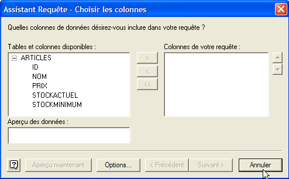

8. Installation und Verwendung eines ODBC-Treibers für [Firebird]
8.1. Installation des Treibers
Es gibt viele Datenbanken auf dem Markt. Um den Datenbankzugriff unter MS Windows zu standardisieren, hat Microsoft eine Schnittstelle namens ODBC (Open DataBase Connectivity) entwickelt. Diese Schicht verbirgt die spezifischen Merkmale jeder Datenbank hinter einer Standardschnittstelle. Für MS Windows sind viele ODBC-Treiber verfügbar, die den Datenbankzugriff erleichtern. Hier sind zum Beispiel einige der ODBC-Treiber, die auf einem Windows XP-Rechner installiert sind:

Eine Anwendung, die auf diese Treiber setzt, kann jede Datenbank nutzen, ohne dass eine Neuprogrammierung erforderlich ist. Der ODBC-Treiber fungiert als Vermittler zwischen der Anwendung und dem DBMS. Die Schnittstelle zwischen Anwendung und ODBC-Treiber ist standardisiert. Wenn Sie das DBMS wechseln, installieren Sie einfach den ODBC-Treiber für das neue DBMS, und die Anwendung bleibt unverändert.
 |
Über den Link [firebird-odbc-provider] auf der [Firebird]-Downloadseite (Abschnitt 2.1) erhalten Sie Zugriff auf einen ODBC-Treiber. Nach der Installation erscheint dieser in der Liste der installierten ODBC-Treiber.
8.2. Erstellen Sie eine ODBC-Datenquelle
- Starten Sie das Tool [Start -> Einstellungen -> Konfigurationstool -> Verwaltung -> ODBC-Datenquellen]:

- Das folgende Fenster wird angezeigt:

- Klicken Sie auf [Hinzufügen], um eine neue Systemdatenquelle (im Bereich [System-DSN]) hinzuzufügen, die wir mit der Firebird-Datenbank [dbarticles] verknüpfen, die wir in Abschnitt 2.3 erstellt haben:

- Zunächst müssen wir den zu verwendenden ODBC-Treiber angeben. Oben wählen wir den Treiber für Firebird aus und klicken dann auf [Fertigstellen]. Der Firebird-ODBC-Treiber-Assistent übernimmt dann die weitere Bearbeitung:

- Wir füllen die verschiedenen Felder aus:

der DSN-Name der ODBC-Quelle – kann beliebig sein | |
Der Name der zu verwendenden Firebird-Datenbank – verwenden Sie [Durchsuchen], um die entsprechende .gbd-Datei auszuwählen. Hier verwenden wir die auf Seite 8 erstellte Datenbank [dbarticles]. | |
Der Benutzername, der für die Verbindung zur Datenbank verwendet werden soll | |
das zu diesem Benutzernamen gehörende Passwort |
Mit der Schaltfläche [Verbindung testen] können Sie die Richtigkeit der eingegebenen Informationen überprüfen. Starten Sie vor der Verwendung das DBMS [Firebird]:

- Bestätigen Sie den ODBC-Assistenten, indem Sie so oft wie nötig auf [OK] klicken
8.3. Testen Sie die ODBC-Quelle
Es gibt verschiedene Möglichkeiten, um zu überprüfen, ob eine ODBC-Quelle ordnungsgemäß funktioniert. Hier verwenden wir Excel:

- Verwenden Sie die oben genannte Option [Daten -> Externe Daten -> Abfrage erstellen]. Dadurch wird das erste Fenster des Assistenten zur Definition der Datenquelle geöffnet. Im Bereich [Datenbanken] werden die derzeit auf dem Rechner definierten ODBC-Quellen aufgelistet:

- Wählen Sie die soeben erstellte ODBC-Quelle [odbc-firebird-articles] aus und fahren Sie mit dem nächsten Schritt fort, indem Sie auf [OK] klicken:

- In diesem Fenster werden die in der ODBC-Quelle verfügbaren Tabellen und Spalten aufgelistet. Wir wählen die gesamte Tabelle aus:

- Fahren Sie mit dem nächsten Schritt fort, indem Sie auf [Weiter] klicken:

- In diesem Schritt können wir die Daten filtern. Hier werden wir jedoch keine Filter anwenden und zum nächsten Schritt übergehen:

- In diesem Schritt können wir die Daten sortieren. Wir werden dies nicht tun und fahren mit dem nächsten Schritt fort:

- Im letzten Schritt werden wir gefragt, was wir mit den Daten machen möchten. Hier exportieren wir sie nach Excel:

- Hier fragt Excel, wo wir die abgerufenen Daten ablegen möchten. Wir legen sie im aktiven Arbeitsblatt beginnend mit Zelle A1 ab. Die Daten werden dann im Excel-Arbeitsblatt angezeigt:

Es gibt noch andere Möglichkeiten, die Gültigkeit einer ODBC-Quelle zu testen. Sie können beispielsweise die kostenlose OpenOffice-Suite verwenden, die unter [http://www.openoffice.org] verfügbar ist. Hier ist ein Beispiel mit OpenOffice Text:
 |  |
- Über ein Symbol auf der linken Seite des OpenOffice-Fensters gelangen Sie zu den Datenquellen. Die Benutzeroberfläche wechselt daraufhin und zeigt einen Bereich zur Verwaltung der Datenquellen an:

- Eine Datenquelle ist vordefiniert: die Quelle [Bibliografie]. Durch einen Rechtsklick auf den Datenquellenbereich können wir über die Option [Datenquellen verwalten] eine neue Datenquelle erstellen:

- Ein Assistent zur [Datenquellenverwaltung] ermöglicht es Ihnen, Datenquellen zu erstellen. Durch einen Rechtsklick auf den Datenquellenbereich können Sie über die Option [Neue Datenquelle] eine neue Datenquelle erstellen:

Beliebiger Name. Hier haben wir den Namen der ODBC-Quelle verwendet | |
OpenOffice kann verschiedene Datenbanktypen über JDBC, ODBC oder direkt (MySQL, Dbase usw.) verarbeiten. Wählen Sie für unser Beispiel „ODBC“ | |
Über die Schaltfläche rechts neben dem Eingabefeld gelangen wir zur Liste der ODBC-Quellen auf dem Rechner. Wir wählen die Quelle [odbc-firebird-articles] aus |
- Wir wechseln zum [ODBC]-Fenster, um den Benutzer zu definieren, unter dessen Anmeldedaten die Verbindung hergestellt werden soll:

Der Eigentümer der ODBC-Quelle |
- Wechseln Sie zum Bereich [Tabellen]. Sie werden zur Eingabe des Passworts aufgefordert. Hier lautet es [masterkey]:

- Klicken Sie auf [OK]. Daraufhin wird die Liste der Tabellen in der ODBC-Quelle angezeigt:

- Sie können die Tabellen auswählen, die im [OpenOffice]-Dokument angezeigt werden sollen. Hier wählen wir die Tabelle [ARTICLES] aus und klicken auf [OK]. Die Definition der Datenquelle ist damit abgeschlossen. Sie erscheint nun in der Liste der Datenquellen für das aktive Dokument:

- Sie können die Tabelle [ARTICLES] mit der Maus aus der Liste in das [OpenOffice]-Dokument ziehen.
8.4. Microsoft Query
Obwohl MS Query im Lieferumfang von MS Office enthalten ist, gibt es nicht immer eine Verknüpfung zu diesem Programm. Es befindet sich im Office-Ordner von MS Office unter dem Namen MSQRY32.EXE. Zum Beispiel: „C:\Programme\Office 2000\Office\MSQRY32.EXE“. Mit MS Query können Sie jede ODBC-Datenquelle mithilfe von SQL-Abfragen abfragen. Diese können grafisch erstellt oder direkt über die Tastatur eingegeben werden. Da die meisten Windows-Datenbanken ODBC-Treiber bereitstellen, können sie alle mit MS Query abgefragt werden. Beim Starten von MS Query erscheint der folgende Bildschirm:

Zunächst müssen wir die abzufragende ODBC-Datenquelle angeben. Verwenden Sie dazu die Option: Datei/Neu:

Wir verwenden die zuvor erstellte ODBC-Quelle. MS Query zeigt dann die Struktur der Quelle an:

Wir klicken auf die Schaltfläche [Abbrechen], da der Assistent nicht besonders nützlich ist, wenn man sich mit SQL auskennt. Über die Option [Datei / SQL ausführen] können wir SQL-Abfragen auf die ausgewählte ODBC-Quelle anwenden:
 |  |
Wir werden aufgefordert, die ODBC-Quelle erneut auszuwählen:

Sobald die ODBC-Quelle ausgewählt ist, können wir SQL-Befehle darauf ausführen:

Wir erhalten das folgende Ergebnis:

Der Leser ist eingeladen, eine ODBC-Quelle mit der Firebird-Datenbank DBBIBLIO anzulegen und die vorangegangenen Beispiele zu wiederholen.